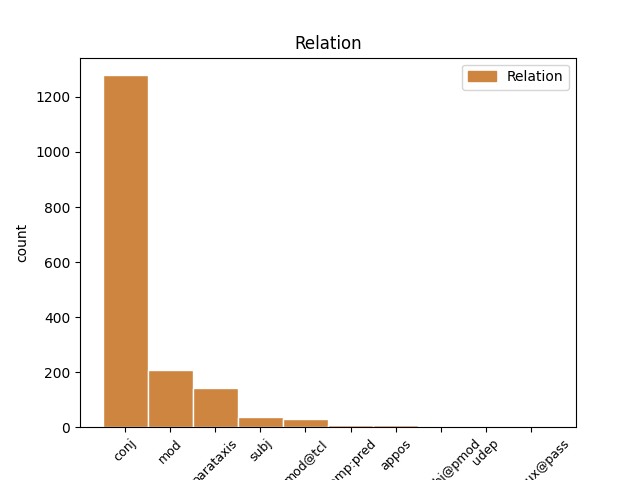
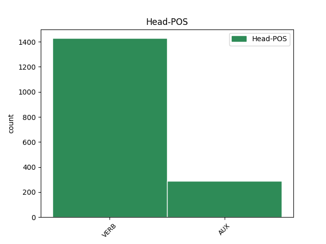
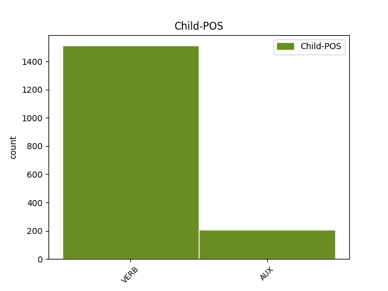

Distribution of features within this leaf



Agreement Rules sorted by frequency.
- When the dependent token is the conjunct(conj) of the head token, and the head token is VERB and the dependent token is VERB.
1 Extragem extrage VERB Vmip1p Mood=Ind|Number=Plur|Person=1|Tense=Pres|VerbForm=Fin 0 _ _ _
2 un _ _ _ _ 0 _ _ _
3 eșantion _ _ _ _ 0 _ _ _
4 și _ _ _ _ 0 _ _ _
5 din _ _ _ _ 0 _ _ _
6 acest _ _ _ _ 0 _ _ _
7 eșantion _ _ _ _ 0 _ _ _
8 conjecturăm conjectura VERB Vmip1p Mood=Ind|Number=Plur|Person=1|Tense=Pres|VerbForm=Fin 1 conj _ _
9 ce _ _ _ _ 0 _ _ _
10 credem _ _ _ _ 0 _ _ _
11 că _ _ _ _ 0 _ _ _
12 se _ _ _ _ 0 _ _ _
13 găsește _ _ _ _ 0 _ _ _
14 în _ _ _ _ 0 _ _ _
15 urnă _ _ _ _ 0 _ _ _
16 . _ _ _ _ 0 _ _ _
1 În _ _ _ _ 0 _ _ _
2 particular _ _ _ _ 0 _ _ _
3 , _ _ _ _ 0 _ _ _
4 este _ _ _ _ 0 _ _ _
5 util _ _ _ _ 0 _ _ _
6 să _ _ _ _ 0 _ _ _
7 se _ _ _ _ 0 _ _ _
8 știe _ _ _ _ 0 _ _ _
9 ce _ _ _ _ 0 _ _ _
10 se _ _ _ _ 0 _ _ _
11 întâmplă întâmpla VERB Vmis3s Mood=Ind|Number=Sing|Person=3|Tense=Past|VerbForm=Fin 0 _ _ _
12 cu _ _ _ _ 0 _ _ _
13 valorile _ _ _ _ 0 _ _ _
14 f _ _ _ _ 0 _ _ _
15 ( _ _ _ _ 0 _ _ _
16 x _ _ _ _ 0 _ _ _
17 ) _ _ _ _ 0 _ _ _
18 ale _ _ _ _ 0 _ _ _
19 funcției _ _ _ _ 0 _ _ _
20 când _ _ _ _ 0 _ _ _
21 x _ _ _ _ 0 _ _ _
22 se _ _ _ _ 0 _ _ _
23 apropie apropia VERB Vmis3s Mood=Ind|Number=Sing|Person=3|Tense=Past|VerbForm=Fin 11 mod _ _
24 din _ _ _ _ 0 _ _ _
25 ce _ _ _ _ 0 _ _ _
26 în _ _ _ _ 0 _ _ _
27 ce _ _ _ _ 0 _ _ _
28 mai _ _ _ _ 0 _ _ _
29 mult _ _ _ _ 0 _ _ _
30 de _ _ _ _ 0 _ _ _
31 punctul _ _ _ _ 0 _ _ _
32 a _ _ _ _ 0 _ _ _
33 . _ _ _ _ 0 _ _ _
1 Coeficientul _ _ _ _ 0 _ _ _
2 de _ _ _ _ 0 _ _ _
3 variație _ _ _ _ 0 _ _ _
4 este fi AUX Vmip3s Mood=Ind|Number=Sing|Person=3|Tense=Pres|VerbForm=Fin 0 _ _ _
5 o _ _ _ _ 0 _ _ _
6 statistică _ _ _ _ 0 _ _ _
7 relativă _ _ _ _ 0 _ _ _
8 a _ _ _ _ 0 _ _ _
9 dispersiei _ _ _ _ 0 _ _ _
10 și _ _ _ _ 0 _ _ _
11 se _ _ _ _ 0 _ _ _
12 folosește folosi VERB Vmip3s Mood=Ind|Number=Sing|Person=3|Tense=Pres|VerbForm=Fin 4 conj _ _
13 la _ _ _ _ 0 _ _ _
14 compararea _ _ _ _ 0 _ _ _
15 dispersiei _ _ _ _ 0 _ _ _
16 diferitelor _ _ _ _ 0 _ _ _
17 variabile _ _ _ _ 0 _ _ _
18 ( _ _ _ _ 0 _ _ _
19 caracteristici _ _ _ _ 0 _ _ _
20 ) _ _ _ _ 0 _ _ _
21 . _ _ _ _ 0 _ _ _
1 Se _ _ _ _ 0 _ _ _
2 poate putea VERB Vmip3s Mood=Ind|Number=Sing|Person=3|Tense=Pres|VerbForm=Fin 0 _ _ _
3 deplasa _ _ _ _ 0 _ _ _
4 operandul _ _ _ _ 0 _ _ _
5 destinație _ _ _ _ 0 _ _ _
6 cu _ _ _ _ 0 _ _ _
7 până _ _ _ _ 0 _ _ _
8 la _ _ _ _ 0 _ _ _
9 31 _ _ _ _ 0 _ _ _
10 de _ _ _ _ 0 _ _ _
11 biți _ _ _ _ 0 _ _ _
12 , _ _ _ _ 0 _ _ _
13 corespunzător _ _ _ _ 0 _ _ _
14 operandului _ _ _ _ 0 _ _ _
15 contor _ _ _ _ 0 _ _ _
16 , _ _ _ _ 0 _ _ _
17 codificat _ _ _ _ 0 _ _ _
18 în _ _ _ _ 0 _ _ _
19 instrucțiune _ _ _ _ 0 _ _ _
20 ( _ _ _ _ 0 _ _ _
21 sunt fi VERB Vmip3p Mood=Ind|Number=Plur|Person=3|Tense=Pres|VerbForm=Fin 2 parataxis _ _
22 luați _ _ _ _ 0 _ _ _
23 în _ _ _ _ 0 _ _ _
24 considerare _ _ _ _ 0 _ _ _
25 numai _ _ _ _ 0 _ _ _
26 ultimii _ _ _ _ 0 _ _ _
27 5 _ _ _ _ 0 _ _ _
28 biți _ _ _ _ 0 _ _ _
29 ai _ _ _ _ 0 _ _ _
30 acestuia _ _ _ _ 0 _ _ _
31 ) _ _ _ _ 0 _ _ _
32 . _ _ _ _ 0 _ _ _
1 Registrul _ _ _ _ 0 _ _ _
2 task _ _ _ _ 0 _ _ _
3 se _ _ _ _ 0 _ _ _
4 încarcă încărca VERB Vmip3 Mood=Ind|Person=3|Tense=Pres|VerbForm=Fin 0 _ _ _
5 apoi _ _ _ _ 0 _ _ _
6 cu _ _ _ _ 0 _ _ _
7 selectorul _ _ _ _ 0 _ _ _
8 unui _ _ _ _ 0 _ _ _
9 nou _ _ _ _ 0 _ _ _
10 TSS _ _ _ _ 0 _ _ _
11 , _ _ _ _ 0 _ _ _
12 și _ _ _ _ 0 _ _ _
13 fiecare _ _ _ _ 0 _ _ _
14 registru _ _ _ _ 0 _ _ _
15 general _ _ _ _ 0 _ _ _
16 este fi AUX Vaip3s Mood=Ind|Number=Sing|Person=3|Tense=Pres|VerbForm=Fin 4 conj _ _
17 încărcat _ _ _ _ 0 _ _ _
18 cu _ _ _ _ 0 _ _ _
19 valorile _ _ _ _ 0 _ _ _
20 respective _ _ _ _ 0 _ _ _
21 , _ _ _ _ 0 _ _ _
22 din _ _ _ _ 0 _ _ _
23 noul _ _ _ _ 0 _ _ _
24 TSS _ _ _ _ 0 _ _ _
25 . _ _ _ _ 0 _ _ _
1 Dacă _ _ _ _ 0 _ _ _
2 V _ _ _ _ 0 _ _ _
3 este _ _ _ _ 0 _ _ _
4 aproape _ _ _ _ 0 _ _ _
5 de _ _ _ _ 0 _ _ _
6 zero _ _ _ _ 0 _ _ _
7 ( _ _ _ _ 0 _ _ _
8 V _ _ _ _ 0 _ _ _
9 < _ _ _ _ 0 _ _ _
10 35% _ _ _ _ 0 _ _ _
11 ) _ _ _ _ 0 _ _ _
12 , _ _ _ _ 0 _ _ _
13 atunci _ _ _ _ 0 _ _ _
14 populația _ _ _ _ 0 _ _ _
15 studiată _ _ _ _ 0 _ _ _
16 statistic _ _ _ _ 0 _ _ _
17 este fi AUX Vmip3s Mood=Ind|Number=Sing|Person=3|Tense=Pres|VerbForm=Fin 0 _ _ _
18 omogenă _ _ _ _ 0 _ _ _
19 și _ _ _ _ 0 _ _ _
20 media _ _ _ _ 0 _ _ _
21 m _ _ _ _ 0 _ _ _
22 este fi AUX Vmip3s Mood=Ind|Number=Sing|Person=3|Tense=Pres|VerbForm=Fin 17 conj _ _
23 reprezentativă _ _ _ _ 0 _ _ _
24 pentru _ _ _ _ 0 _ _ _
25 această _ _ _ _ 0 _ _ _
26 populație _ _ _ _ 0 _ _ _
27 . _ _ _ _ 0 _ _ _
1 Durata _ _ _ _ 0 _ _ _
2 de _ _ _ _ 0 _ _ _
3 viață _ _ _ _ 0 _ _ _
4 a _ _ _ _ 0 _ _ _
5 variabilelor _ _ _ _ 0 _ _ _
6 interne _ _ _ _ 0 _ _ _
7 este fi AUX Vmip3s Mood=Ind|Number=Sing|Person=3|Tense=Pres|VerbForm=Fin 0 _ _ _
8 mult _ _ _ _ 0 _ _ _
9 mai _ _ _ _ 0 _ _ _
10 scurtă _ _ _ _ 0 _ _ _
11 ca _ _ _ _ 0 _ _ _
12 a _ _ _ _ 0 _ _ _
13 variabilelor _ _ _ _ 0 _ _ _
14 externe _ _ _ _ 0 _ _ _
15 – _ _ _ _ 0 _ _ _
16 alocarea _ _ _ _ 0 _ _ _
17 de _ _ _ _ 0 _ _ _
18 memorie _ _ _ _ 0 _ _ _
19 se _ _ _ _ 0 _ _ _
20 face face VERB Vmip3s Mood=Ind|Number=Sing|Person=3|Tense=Pres|VerbForm=Fin 7 parataxis _ _
21 la _ _ _ _ 0 _ _ _
22 intrarea _ _ _ _ 0 _ _ _
23 în _ _ _ _ 0 _ _ _
24 funcție _ _ _ _ 0 _ _ _
25 , _ _ _ _ 0 _ _ _
26 pentru _ _ _ _ 0 _ _ _
27 ca _ _ _ _ 0 _ _ _
28 la _ _ _ _ 0 _ _ _
29 părăsirea _ _ _ _ 0 _ _ _
30 funcției _ _ _ _ 0 _ _ _
31 , _ _ _ _ 0 _ _ _
32 memoria _ _ _ _ 0 _ _ _
33 ocupată _ _ _ _ 0 _ _ _
34 de _ _ _ _ 0 _ _ _
35 variabilă _ _ _ _ 0 _ _ _
36 să _ _ _ _ 0 _ _ _
37 fie _ _ _ _ 0 _ _ _
38 eliberată _ _ _ _ 0 _ _ _
39 . _ _ _ _ 0 _ _ _
1 Am _ _ _ _ 0 _ _ _
2 neglijat _ _ _ _ 0 _ _ _
3 energia _ _ _ _ 0 _ _ _
4 cinetică _ _ _ _ 0 _ _ _
5 a _ _ _ _ 0 _ _ _
6 electronilor _ _ _ _ 0 _ _ _
7 la _ _ _ _ 0 _ _ _
8 catod _ _ _ _ 0 _ _ _
9 , _ _ _ _ 0 _ _ _
10 astfel _ _ _ _ 0 _ _ _
11 că _ _ _ _ 0 _ _ _
12 atunci _ _ _ _ 0 _ _ _
13 când _ _ _ _ 0 _ _ _
14 electronii _ _ _ _ 0 _ _ _
15 lovesc lovi VERB Vmip3p Mood=Ind|Number=Plur|Person=3|Tense=Pres|VerbForm=Fin 17 mod@tcl _ _
16 ținta _ _ _ _ 0 _ _ _
17 au avea VERB Vmip3p Mood=Ind|Number=Plur|Person=3|Tense=Pres|VerbForm=Fin 0 _ _ _
18 o _ _ _ _ 0 _ _ _
19 energie _ _ _ _ 0 _ _ _
20 cinetică _ _ _ _ 0 _ _ _
21 eU _ _ _ _ 0 _ _ _
22 , _ _ _ _ 0 _ _ _
23 U _ _ _ _ 0 _ _ _
24 fiind _ _ _ _ 0 _ _ _
25 diferența _ _ _ _ 0 _ _ _
26 de _ _ _ _ 0 _ _ _
27 potențial _ _ _ _ 0 _ _ _
28 aplicată _ _ _ _ 0 _ _ _
29 electrozilor _ _ _ _ 0 _ _ _
30 , _ _ _ _ 0 _ _ _
31 iar _ _ _ _ 0 _ _ _
32 e _ _ _ _ 0 _ _ _
33 sarcina _ _ _ _ 0 _ _ _
34 electronului _ _ _ _ 0 _ _ _
35 . _ _ _ _ 0 _ _ _
1 Spațiile _ _ _ _ 0 _ _ _
2 normate _ _ _ _ 0 _ _ _
3 complete _ _ _ _ 0 _ _ _
4 se _ _ _ _ 0 _ _ _
5 numesc numi VERB Vmip3p Mood=Ind|Number=Plur|Person=3|Tense=Pres|VerbForm=Fin 0 _ _ _
6 spații _ _ _ _ 0 _ _ _
7 Banach _ _ _ _ 0 _ _ _
8 iar _ _ _ _ 0 _ _ _
9 spațiile _ _ _ _ 0 _ _ _
10 prehilbertiene _ _ _ _ 0 _ _ _
11 complete _ _ _ _ 0 _ _ _
12 sunt fi AUX Vaip3p Mood=Ind|Number=Plur|Person=3|Tense=Pres|VerbForm=Fin 5 mod _ _
13 numite _ _ _ _ 0 _ _ _
14 spații _ _ _ _ 0 _ _ _
15 Hilbert _ _ _ _ 0 _ _ _
16 . _ _ _ _ 0 _ _ _
1 Când _ _ _ _ 0 _ _ _
2 apare apărea VERB Vmip3s Mood=Ind|Number=Sing|Person=3|Tense=Pres|VerbForm=Fin 14 mod _ _
3 o _ _ _ _ 0 _ _ _
4 comutare _ _ _ _ 0 _ _ _
5 de _ _ _ _ 0 _ _ _
6 task _ _ _ _ 0 _ _ _
7 , _ _ _ _ 0 _ _ _
8 toate _ _ _ _ 0 _ _ _
9 registrele _ _ _ _ 0 _ _ _
10 task _ _ _ _ 0 _ _ _
11 -ului _ _ _ _ 0 _ _ _
12 curent _ _ _ _ 0 _ _ _
13 executat _ _ _ _ 0 _ _ _
14 sunt fi AUX Vaip3p Mood=Ind|Number=Plur|Person=3|Tense=Pres|VerbForm=Fin 0 _ _ _
15 salvate _ _ _ _ 0 _ _ _
16 în _ _ _ _ 0 _ _ _
17 TSS _ _ _ _ 0 _ _ _
18 -ul _ _ _ _ 0 _ _ _
19 activ _ _ _ _ 0 _ _ _
20 . _ _ _ _ 0 _ _ _
1 și _ _ _ _ 0 _ _ _
2 , _ _ _ _ 0 _ _ _
3 deși _ _ _ _ 0 _ _ _
4 ceea _ _ _ _ 0 _ _ _
5 ce _ _ _ _ 0 _ _ _
6 pare părea VERB Vmip3s Mood=Ind|Number=Sing|Person=3|Tense=Pres|VerbForm=Fin 8 subj _ _
7 arbitrar _ _ _ _ 0 _ _ _
8 are avea VERB Vmip3s Mood=Ind|Number=Sing|Person=3|Tense=Pres|VerbForm=Fin 0 _ _ _
9 o _ _ _ _ 0 _ _ _
10 lege _ _ _ _ 0 _ _ _
11 lăuntrică _ _ _ _ 0 _ _ _
12 , _ _ _ _ 0 _ _ _
13 totul _ _ _ _ 0 _ _ _
14 rămâne _ _ _ _ 0 _ _ _
15 într- _ _ _ _ 0 _ _ _
16 un _ _ _ _ 0 _ _ _
17 ermetism _ _ _ _ 0 _ _ _
18 voit _ _ _ _ 0 _ _ _
19 și _ _ _ _ 0 _ _ _
20 cu _ _ _ _ 0 _ _ _
21 atât _ _ _ _ 0 _ _ _
22 mai _ _ _ _ 0 _ _ _
23 admirat _ _ _ _ 0 _ _ _
24 cu _ _ _ _ 0 _ _ _
25 cât _ _ _ _ 0 _ _ _
26 e _ _ _ _ 0 _ _ _
27 mai _ _ _ _ 0 _ _ _
28 greu _ _ _ _ 0 _ _ _
29 de _ _ _ _ 0 _ _ _
30 pătruns _ _ _ _ 0 _ _ _
31 . _ _ _ _ 0 _ _ _
1 Ceea _ _ _ _ 0 _ _ _
2 ce _ _ _ _ 0 _ _ _
3 ne _ _ _ _ 0 _ _ _
4 reține reține VERB Vmip3s Mood=Ind|Number=Sing|Person=3|Tense=Pres|VerbForm=Fin 7 subj _ _
5 în _ _ _ _ 0 _ _ _
6 Galois _ _ _ _ 0 _ _ _
7 e fi AUX Vmip3s Mood=Ind|Number=Sing|Person=3|Tense=Pres|VerbForm=Fin 0 _ _ _
8 alăturarea _ _ _ _ 0 _ _ _
9 patetică _ _ _ _ 0 _ _ _
10 , _ _ _ _ 0 _ _ _
11 făcută _ _ _ _ 0 _ _ _
12 să _ _ _ _ 0 _ _ _
13 izbească _ _ _ _ 0 _ _ _
14 imaginațiile _ _ _ _ 0 _ _ _
15 , _ _ _ _ 0 _ _ _
16 a _ _ _ _ 0 _ _ _
17 unui _ _ _ _ 0 _ _ _
18 mare _ _ _ _ 0 _ _ _
19 matematician _ _ _ _ 0 _ _ _
20 și _ _ _ _ 0 _ _ _
21 revoluționar _ _ _ _ 0 _ _ _
22 . _ _ _ _ 0 _ _ _
1 Spre _ _ _ _ 0 _ _ _
2 deosebire _ _ _ _ 0 _ _ _
3 de _ _ _ _ 0 _ _ _
4 variabilele _ _ _ _ 0 _ _ _
5 externe _ _ _ _ 0 _ _ _
6 , _ _ _ _ 0 _ _ _
7 variabilele _ _ _ _ 0 _ _ _
8 interne _ _ _ _ 0 _ _ _
9 ( _ _ _ _ 0 _ _ _
10 numite _ _ _ _ 0 _ _ _
11 și _ _ _ _ 0 _ _ _
12 automatice _ _ _ _ 0 _ _ _
13 sau _ _ _ _ 0 _ _ _
14 locale _ _ _ _ 0 _ _ _
15 ) _ _ _ _ 0 _ _ _
16 au avea VERB Vmip3p Mood=Ind|Number=Plur|Person=3|Tense=Pres|VerbForm=Fin 0 _ _ _
17 un _ _ _ _ 0 _ _ _
18 domeniu _ _ _ _ 0 _ _ _
19 mult _ _ _ _ 0 _ _ _
20 mai _ _ _ _ 0 _ _ _
21 restrâns _ _ _ _ 0 _ _ _
22 - _ _ _ _ 0 _ _ _
23 ele _ _ _ _ 0 _ _ _
24 sunt fi AUX Vaip3p Mood=Ind|Number=Plur|Person=3|Tense=Pres|VerbForm=Fin 16 parataxis _ _
25 cunoscute _ _ _ _ 0 _ _ _
26 numai _ _ _ _ 0 _ _ _
27 în _ _ _ _ 0 _ _ _
28 interiorul _ _ _ _ 0 _ _ _
29 funcției _ _ _ _ 0 _ _ _
30 în _ _ _ _ 0 _ _ _
31 care _ _ _ _ 0 _ _ _
32 sunt _ _ _ _ 0 _ _ _
33 definite _ _ _ _ 0 _ _ _
34 . _ _ _ _ 0 _ _ _
1 Un _ _ _ _ 0 _ _ _
2 răspuns _ _ _ _ 0 _ _ _
3 la _ _ _ _ 0 _ _ _
4 această _ _ _ _ 0 _ _ _
5 întrebare _ _ _ _ 0 _ _ _
6 poate _ _ _ _ 0 _ _ _
7 fi _ _ _ _ 0 _ _ _
8 dat _ _ _ _ 0 _ _ _
9 cu _ _ _ _ 0 _ _ _
10 inegalitatea _ _ _ _ 0 _ _ _
11 lui _ _ _ _ 0 _ _ _
12 Cebîșev _ _ _ _ 0 _ _ _
13 din _ _ _ _ 0 _ _ _
14 care _ _ _ _ 0 _ _ _
15 rezultă _ _ _ _ 0 _ _ _
16 că _ _ _ _ 0 _ _ _
17 pentru _ _ _ _ 0 _ _ _
18 orice _ _ _ _ 0 _ _ _
19 serie _ _ _ _ 0 _ _ _
20 de _ _ _ _ 0 _ _ _
21 distribuție _ _ _ _ 0 _ _ _
22 fracțiunea _ _ _ _ 0 _ _ _
23 de _ _ _ _ 0 _ _ _
24 date _ _ _ _ 0 _ _ _
25 situată _ _ _ _ 0 _ _ _
26 la _ _ _ _ 0 _ _ _
27 cel _ _ _ _ 0 _ _ _
28 mult _ _ _ _ 0 _ _ _
29 k _ _ _ _ 0 _ _ _
30 unități _ _ _ _ 0 _ _ _
31 de _ _ _ _ 0 _ _ _
32 deviație _ _ _ _ 0 _ _ _
33 standard _ _ _ _ 0 _ _ _
34 față _ _ _ _ 0 _ _ _
35 de _ _ _ _ 0 _ _ _
36 medie _ _ _ _ 0 _ _ _
37 este fi AUX Vmip3s Mood=Ind|Number=Sing|Person=3|Tense=Pres|VerbForm=Fin 0 _ _ _
38 cel _ _ _ _ 0 _ _ _
39 puțin _ _ _ _ 0 _ _ _
40 1 _ _ _ _ 0 _ _ _
41 - _ _ _ _ 0 _ _ _
42 1 _ _ _ _ 0 _ _ _
43 / _ _ _ _ 0 _ _ _
44 ( _ _ _ _ 0 _ _ _
45 k _ _ _ _ 0 _ _ _
46 * _ _ _ _ 0 _ _ _
47 k _ _ _ _ 0 _ _ _
48 ) _ _ _ _ 0 _ _ _
49 , _ _ _ _ 0 _ _ _
50 unde _ _ _ _ 0 _ _ _
51 k _ _ _ _ 0 _ _ _
52 este fi AUX Vmip3s Mood=Ind|Number=Sing|Person=3|Tense=Pres|VerbForm=Fin 37 mod _ _
53 un _ _ _ _ 0 _ _ _
54 număr _ _ _ _ 0 _ _ _
55 pozitiv _ _ _ _ 0 _ _ _
56 oarecare _ _ _ _ 0 _ _ _
57 mai _ _ _ _ 0 _ _ _
58 mare _ _ _ _ 0 _ _ _
59 ca _ _ _ _ 0 _ _ _
60 1 _ _ _ _ 0 _ _ _
61 . _ _ _ _ 0 _ _ _
1 problema _ _ _ _ 0 _ _ _
2 de _ _ _ _ 0 _ _ _
3 probabilitate _ _ _ _ 0 _ _ _
4 este fi AUX Vmip3s Mood=Ind|Number=Sing|Person=3|Tense=Pres|VerbForm=Fin 0 _ _ _
5 dacă _ _ _ _ 0 _ _ _
6 scoatem _ _ _ _ 0 _ _ _
7 o _ _ _ _ 0 _ _ _
8 bilă _ _ _ _ 0 _ _ _
9 , _ _ _ _ 0 _ _ _
10 care _ _ _ _ 0 _ _ _
11 este fi AUX Vmip3s Mood=Ind|Number=Sing|Person=3|Tense=Pres|VerbForm=Fin 4 subj _ _
12 șansa _ _ _ _ 0 _ _ _
13 ca _ _ _ _ 0 _ _ _
14 aceasta _ _ _ _ 0 _ _ _
15 să _ _ _ _ 0 _ _ _
16 fie _ _ _ _ 0 _ _ _
17 albă _ _ _ _ 0 _ _ _
18 ? _ _ _ _ 0 _ _ _
1 Un _ _ _ _ 0 _ _ _
2 obiect _ _ _ _ 0 _ _ _
3 este fi AUX Vmip3s Mood=Ind|Number=Sing|Person=3|Tense=Pres|VerbForm=Fin 0 _ _ _
4 un _ _ _ _ 0 _ _ _
5 exemplar _ _ _ _ 0 _ _ _
6 sau _ _ _ _ 0 _ _ _
7 o _ _ _ _ 0 _ _ _
8 instanță _ _ _ _ 0 _ _ _
9 a _ _ _ _ 0 _ _ _
10 unei _ _ _ _ 0 _ _ _
11 clase _ _ _ _ 0 _ _ _
12 ( _ _ _ _ 0 _ _ _
13 în _ _ _ _ 0 _ _ _
14 vechea _ _ _ _ 0 _ _ _
15 terminologie _ _ _ _ 0 _ _ _
16 obiectul _ _ _ _ 0 _ _ _
17 este fi AUX Vmip3s Mood=Ind|Number=Sing|Person=3|Tense=Pres|VerbForm=Fin 3 parataxis _ _
18 echivalent _ _ _ _ 0 _ _ _
19 unei _ _ _ _ 0 _ _ _
20 variabile _ _ _ _ 0 _ _ _
21 , _ _ _ _ 0 _ _ _
22 iar _ _ _ _ 0 _ _ _
23 clasa _ _ _ _ 0 _ _ _
24 este _ _ _ _ 0 _ _ _
25 echivalentul _ _ _ _ 0 _ _ _
26 unui _ _ _ _ 0 _ _ _
27 tip _ _ _ _ 0 _ _ _
28 definit _ _ _ _ 0 _ _ _
29 de _ _ _ _ 0 _ _ _
30 utilizator _ _ _ _ 0 _ _ _
31 ) _ _ _ _ 0 _ _ _
32 . _ _ _ _ 0 _ _ _
1 Cei _ _ _ _ 0 _ _ _
2 trei _ _ _ _ 0 _ _ _
3 înaintași _ _ _ _ 0 _ _ _
4 , _ _ _ _ 0 _ _ _
5 sărmanii _ _ _ _ 0 _ _ _
6 , _ _ _ _ 0 _ _ _
7 se _ _ _ _ 0 _ _ _
8 vede _ _ _ _ 0 _ _ _
9 că _ _ _ _ 0 _ _ _
10 erau fi AUX Vmii3p Mood=Ind|Number=Plur|Person=3|Tense=Imp|VerbForm=Fin 0 _ _ _
11 la _ _ _ _ 0 _ _ _
12 fel _ _ _ _ 0 _ _ _
13 de _ _ _ _ 0 _ _ _
14 bine _ _ _ _ 0 _ _ _
15 pregătiți pregăti VERB Vmip2p Mood=Ind|Number=Plur|Person=2|Tense=Pres|VerbForm=Fin 10 comp:pred _ _
16 ca _ _ _ _ 0 _ _ _
17 și _ _ _ _ 0 _ _ _
18 mine _ _ _ _ 0 _ _ _
19 . _ _ _ _ 0 _ _ _
1 Fiecare _ _ _ _ 0 _ _ _
2 serie _ _ _ _ 0 _ _ _
3 spectrală _ _ _ _ 0 _ _ _
4 are avea VERB Vmip3s Mood=Ind|Number=Sing|Person=3|Tense=Pres|VerbForm=Fin 0 _ _ _
5 o _ _ _ _ 0 _ _ _
6 lungime _ _ _ _ 0 _ _ _
7 de _ _ _ _ 0 _ _ _
8 undă _ _ _ _ 0 _ _ _
9 limită _ _ _ _ 0 _ _ _
10 , _ _ _ _ 0 _ _ _
11 începând _ _ _ _ 0 _ _ _
12 de _ _ _ _ 0 _ _ _
13 la _ _ _ _ 0 _ _ _
14 care _ _ _ _ 0 _ _ _
15 apare _ _ _ _ 0 _ _ _
16 apoi _ _ _ _ 0 _ _ _
17 spectrul _ _ _ _ 0 _ _ _
18 continuu _ _ _ _ 0 _ _ _
19 ( _ _ _ _ 0 _ _ _
20 limita _ _ _ _ 0 _ _ _
21 seriei _ _ _ _ 0 _ _ _
22 se _ _ _ _ 0 _ _ _
23 obține obține VERB Vmip3s Mood=Ind|Number=Sing|Person=3|Tense=Pres|VerbForm=Fin 4 appos _ _
24 pentru _ _ _ _ 0 _ _ _
25 k _ _ _ _ 0 _ _ _
26 = _ _ _ _ 0 _ _ _
27 infinit _ _ _ _ 0 _ _ _
28 ) _ _ _ _ 0 _ _ _
29 . _ _ _ _ 0 _ _ _
1 Fără _ _ _ _ 0 _ _ _
2 să _ _ _ _ 0 _ _ _
3 știm _ _ _ _ 0 _ _ _
4 , _ _ _ _ 0 _ _ _
5 devenim deveni VERB Vmip1p Mood=Ind|Number=Plur|Person=1|Tense=Pres|VerbForm=Fin 0 _ _ _
6 cumplit _ _ _ _ 0 _ _ _
7 de _ _ _ _ 0 _ _ _
8 dezechilibrați dezechilibra VERB Vmii2p Mood=Ind|Number=Plur|Person=2|Tense=Imp|VerbForm=Fin 5 comp:pred _ _
9 când _ _ _ _ 0 _ _ _
10 ne _ _ _ _ 0 _ _ _
11 detașăm _ _ _ _ 0 _ _ _
12 de _ _ _ _ 0 _ _ _
13 natura _ _ _ _ 0 _ _ _
14 lucrurilor _ _ _ _ 0 _ _ _
15 pământești _ _ _ _ 0 _ _ _
16 . _ _ _ _ 0 _ _ _
1 Ceea _ _ _ _ 0 _ _ _
2 ce _ _ _ _ 0 _ _ _
3 este fi AUX Vmip3s Mood=Ind|Number=Sing|Person=3|Tense=Pres|VerbForm=Fin 8 subj _ _
4 important _ _ _ _ 0 _ _ _
5 în _ _ _ _ 0 _ _ _
6 teoria _ _ _ _ 0 _ _ _
7 culturilor _ _ _ _ 0 _ _ _
8 consistă consista VERB Vmis3s Mood=Ind|Number=Sing|Person=3|Tense=Past|VerbForm=Fin 0 _ _ _
9 în _ _ _ _ 0 _ _ _
10 a _ _ _ _ 0 _ _ _
11 cunoaște _ _ _ _ 0 _ _ _
12 dacă _ _ _ _ 0 _ _ _
13 afirmarea _ _ _ _ 0 _ _ _
14 uneia _ _ _ _ 0 _ _ _
15 este _ _ _ _ 0 _ _ _
16 numai _ _ _ _ 0 _ _ _
17 un _ _ _ _ 0 _ _ _
18 episod _ _ _ _ 0 _ _ _
19 nerelevator _ _ _ _ 0 _ _ _
20 sau _ _ _ _ 0 _ _ _
21 dacă _ _ _ _ 0 _ _ _
22 , _ _ _ _ 0 _ _ _
23 dimpotrivă _ _ _ _ 0 _ _ _
24 , _ _ _ _ 0 _ _ _
25 este _ _ _ _ 0 _ _ _
26 o _ _ _ _ 0 _ _ _
27 destinație _ _ _ _ 0 _ _ _
28 esențială _ _ _ _ 0 _ _ _
29 . _ _ _ _ 0 _ _ _
1 Când _ _ _ _ 0 _ _ _
2 avem avea VERB Vmip1p Mood=Ind|Number=Plur|Person=1|Tense=Pres|VerbForm=Fin 21 mod@tcl _ _
3 de-a _ _ _ _ 0 _ _ _
4 face _ _ _ _ 0 _ _ _
5 cu _ _ _ _ 0 _ _ _
6 cazuri _ _ _ _ 0 _ _ _
7 de _ _ _ _ 0 _ _ _
8 abuz _ _ _ _ 0 _ _ _
9 sexual _ _ _ _ 0 _ _ _
10 săvârșit _ _ _ _ 0 _ _ _
11 asupra _ _ _ _ 0 _ _ _
12 unui _ _ _ _ 0 _ _ _
13 copil _ _ _ _ 0 _ _ _
14 , _ _ _ _ 0 _ _ _
15 una _ _ _ _ 0 _ _ _
16 dintre _ _ _ _ 0 _ _ _
17 cele _ _ _ _ 0 _ _ _
18 mai _ _ _ _ 0 _ _ _
19 mari _ _ _ _ 0 _ _ _
20 probleme _ _ _ _ 0 _ _ _
21 este fi AUX Vmip3s Mood=Ind|Number=Sing|Person=3|Tense=Pres|VerbForm=Fin 0 _ _ _
22 vina _ _ _ _ 0 _ _ _
23 pe _ _ _ _ 0 _ _ _
24 care _ _ _ _ 0 _ _ _
25 copilul _ _ _ _ 0 _ _ _
26 o _ _ _ _ 0 _ _ _
27 simte _ _ _ _ 0 _ _ _
28 întotdeauna _ _ _ _ 0 _ _ _
29 în _ _ _ _ 0 _ _ _
30 timpul _ _ _ _ 0 _ _ _
31 și _ _ _ _ 0 _ _ _
32 după _ _ _ _ 0 _ _ _
33 eveniment _ _ _ _ 0 _ _ _
34 . _ _ _ _ 0 _ _ _
1 Prin _ _ _ _ 0 _ _ _
2 urmare _ _ _ _ 0 _ _ _
3 , _ _ _ _ 0 _ _ _
4 variabilele _ _ _ _ 0 _ _ _
5 externe _ _ _ _ 0 _ _ _
6 au avea VERB Vmip3p Mood=Ind|Number=Plur|Person=3|Tense=Pres|VerbForm=Fin 0 _ _ _
7 ca _ _ _ _ 0 _ _ _
8 domeniu _ _ _ _ 0 _ _ _
9 ( _ _ _ _ 0 _ _ _
10 sunt fi AUX Vaip3p Mood=Ind|Number=Plur|Person=3|Tense=Pres|VerbForm=Fin 6 appos _ _
11 văzute _ _ _ _ 0 _ _ _
12 și _ _ _ _ 0 _ _ _
13 pot _ _ _ _ 0 _ _ _
14 fi _ _ _ _ 0 _ _ _
15 accesate _ _ _ _ 0 _ _ _
16 din _ _ _ _ 0 _ _ _
17 ) _ _ _ _ 0 _ _ _
18 întregul _ _ _ _ 0 _ _ _
19 fișier _ _ _ _ 0 _ _ _
20 sursă _ _ _ _ 0 _ _ _
21 în _ _ _ _ 0 _ _ _
22 care _ _ _ _ 0 _ _ _
23 sunt _ _ _ _ 0 _ _ _
24 definite _ _ _ _ 0 _ _ _
25 . _ _ _ _ 0 _ _ _
1 Cerea cere VERB Vmii3s Mood=Ind|Number=Sing|Person=3|Tense=Imp|VerbForm=Fin 0 _ _ _
2 bani _ _ _ _ 0 _ _ _
3 de _ _ _ _ 0 _ _ _
4 la _ _ _ _ 0 _ _ _
5 cine _ _ _ _ 0 _ _ _
6 putea putea VERB Vmii3s Mood=Ind|Number=Sing|Person=3|Tense=Imp|VerbForm=Fin 1 comp:obj@pmod _ SpaceAfter=No
7 , _ _ _ _ 0 _ _ _
8 spre _ _ _ _ 0 _ _ _
9 a _ _ _ _ 0 _ _ _
10 trăi _ _ _ _ 0 _ _ _
11 pe _ _ _ _ 0 _ _ _
12 un _ _ _ _ 0 _ _ _
13 picior _ _ _ _ 0 _ _ _
14 mai _ _ _ _ 0 _ _ _
15 convenabil _ _ _ _ 0 _ _ _
16 . _ _ _ _ 0 _ _ _
1 Al. _ _ _ _ 0 _ _ _
2 Vlahuță _ _ _ _ 0 _ _ _
3 și _ _ _ _ 0 _ _ _
4 B. _ _ _ _ 0 _ _ _
5 Delavrancea _ _ _ _ 0 _ _ _
6 sunt fi VERB Vmip3p Mood=Ind|Number=Plur|Person=3|Tense=Pres|VerbForm=Fin 0 _ _ _
7 , _ _ _ _ 0 _ _ _
8 în _ _ _ _ 0 _ _ _
9 1893 _ _ _ _ 0 _ _ _
10 , _ _ _ _ 0 _ _ _
11 comentați comenta VERB Vmii2p Mood=Ind|Number=Plur|Person=2|Tense=Imp|VerbForm=Fin 6 comp:aux@pass _ _
12 favorabil _ _ _ _ 0 _ _ _
13 , _ _ _ _ 0 _ _ _
14 dar _ _ _ _ 0 _ _ _
15 criticați _ _ _ _ 0 _ _ _
16 în _ _ _ _ 0 _ _ _
17 1894 _ _ _ _ 0 _ _ _
18 , _ _ _ _ 0 _ _ _
19 după _ _ _ _ 0 _ _ _
20 declanșarea _ _ _ _ 0 _ _ _
21 polemicii _ _ _ _ 0 _ _ _
22 cu _ _ _ _ 0 _ _ _
23 „ _ _ _ _ 0 _ _ _
24 Viața _ _ _ _ 0 _ _ _
25 ” _ _ _ _ 0 _ _ _
26 . _ _ _ _ 0 _ _ _
1 Foarte _ _ _ _ 0 _ _ _
2 rar _ _ _ _ 0 _ _ _
3 pacienții _ _ _ _ 0 _ _ _
4 prezintă prezenta VERB Vmip3 Mood=Ind|Person=3|Tense=Pres|VerbForm=Fin 0 _ _ _
5 Sindrom _ _ _ _ 0 _ _ _
6 Neuroleptic _ _ _ _ 0 _ _ _
7 Malign _ _ _ _ 0 _ _ _
8 ( _ _ _ _ 0 _ _ _
9 simptome _ _ _ _ 0 _ _ _
10 severe _ _ _ _ 0 _ _ _
11 de _ _ _ _ 0 _ _ _
12 rigiditate _ _ _ _ 0 _ _ _
13 musculară _ _ _ _ 0 _ _ _
14 , _ _ _ _ 0 _ _ _
15 febră _ _ _ _ 0 _ _ _
16 sau _ _ _ _ 0 _ _ _
17 confuzie _ _ _ _ 0 _ _ _
18 mentală _ _ _ _ 0 _ _ _
19 ) _ _ _ _ 0 _ _ _
20 atunci _ _ _ _ 0 _ _ _
21 când _ _ _ _ 0 _ _ _
22 medicamentele _ _ _ _ 0 _ _ _
23 antiparkinsoniene _ _ _ _ 0 _ _ _
24 sunt fi AUX Vaip3p Mood=Ind|Number=Plur|Person=3|Tense=Pres|VerbForm=Fin 4 mod@tcl _ _
25 reduse _ _ _ _ 0 _ _ _
26 sau _ _ _ _ 0 _ _ _
27 oprite _ _ _ _ 0 _ _ _
28 brusc _ _ _ _ 0 _ _ _
29 . _ _ _ _ 0 _ _ _
Disagree Examples:
1 Se _ _ _ _ 0 _ _ _
2 petrecea _ _ _ _ 0 _ _ _
3 însă _ _ _ _ 0 _ _ _
4 ceva _ _ _ _ 0 _ _ _
5 ciudat _ _ _ _ 0 _ _ _
6 : _ _ _ _ 0 _ _ _
7 deși _ _ _ _ 0 _ _ _
8 Goldstein _ _ _ _ 0 _ _ _
9 era _ _ _ _ 0 _ _ _
10 detestat _ _ _ _ 0 _ _ _
11 și _ _ _ _ 0 _ _ _
12 disprețuit _ _ _ _ 0 _ _ _
13 de _ _ _ _ 0 _ _ _
14 toată _ _ _ _ 0 _ _ _
15 lumea _ _ _ _ 0 _ _ _
16 , _ _ _ _ 0 _ _ _
17 deși _ _ _ _ 0 _ _ _
18 în _ _ _ _ 0 _ _ _
19 fiecare _ _ _ _ 0 _ _ _
20 zi _ _ _ _ 0 _ _ _
21 și _ _ _ _ 0 _ _ _
22 de _ _ _ _ 0 _ _ _
23 o _ _ _ _ 0 _ _ _
24 mie _ _ _ _ 0 _ _ _
25 de _ _ _ _ 0 _ _ _
26 ori _ _ _ _ 0 _ _ _
27 pe _ _ _ _ 0 _ _ _
28 zi _ _ _ _ 0 _ _ _
29 , _ _ _ _ 0 _ _ _
30 pe _ _ _ _ 0 _ _ _
31 podiumuri _ _ _ _ 0 _ _ _
32 , _ _ _ _ 0 _ _ _
33 la _ _ _ _ 0 _ _ _
34 tele-ecran _ _ _ _ 0 _ _ _
35 , _ _ _ _ 0 _ _ _
36 în _ _ _ _ 0 _ _ _
37 ziare _ _ _ _ 0 _ _ _
38 , _ _ _ _ 0 _ _ _
39 în _ _ _ _ 0 _ _ _
40 cărți _ _ _ _ 0 _ _ _
41 , _ _ _ _ 0 _ _ _
42 teoriile _ _ _ _ 0 _ _ _
43 lui _ _ _ _ 0 _ _ _
44 erau _ _ _ _ 0 _ _ _
45 respinse _ _ _ _ 0 _ _ _
46 , _ _ _ _ 0 _ _ _
47 zdrobite _ _ _ _ 0 _ _ _
48 , _ _ _ _ 0 _ _ _
49 ridiculizate _ _ _ _ 0 _ _ _
50 , _ _ _ _ 0 _ _ _
51 proclamate _ _ _ _ 0 _ _ _
52 sus _ _ _ _ 0 _ _ _
53 și _ _ _ _ 0 _ _ _
54 tare _ _ _ _ 0 _ _ _
55 , _ _ _ _ 0 _ _ _
56 în _ _ _ _ 0 _ _ _
57 văzul _ _ _ _ 0 _ _ _
58 mulțimii _ _ _ _ 0 _ _ _
59 , _ _ _ _ 0 _ _ _
60 ca _ _ _ _ 0 _ _ _
61 să _ _ _ _ 0 _ _ _
62 se _ _ _ _ 0 _ _ _
63 vadă vedea VERB Vmsp3 Mood=Sub|Person=3|Tense=Pres|VerbForm=Fin 0 _ _ _
64 ce _ _ _ _ 0 _ _ _
65 prostii _ _ _ _ 0 _ _ _
66 lamentabile _ _ _ _ 0 _ _ _
67 erau fi AUX Vmii3p Mood=Ind|Number=Plur|Person=3|Tense=Imp|VerbForm=Fin 63 subj _ SpaceAfter=No
68 , _ _ _ _ 0 _ _ _
69 în _ _ _ _ 0 _ _ _
70 ciuda _ _ _ _ 0 _ _ _
71 tuturor _ _ _ _ 0 _ _ _
72 acestor _ _ _ _ 0 _ _ _
73 lucruri _ _ _ _ 0 _ _ _
74 , _ _ _ _ 0 _ _ _
75 influența _ _ _ _ 0 _ _ _
76 lui _ _ _ _ 0 _ _ _
77 parcă _ _ _ _ 0 _ _ _
78 niciodată _ _ _ _ 0 _ _ _
79 nu _ _ _ _ 0 _ _ _
80 slăbea _ _ _ _ 0 _ _ _
81 . _ _ _ _ 0 _ _ _
1 Nu _ _ _ _ 0 _ _ _
2 erau _ _ _ _ 0 _ _ _
3 decât _ _ _ _ 0 _ _ _
4 niște _ _ _ _ 0 _ _ _
5 vorbe _ _ _ _ 0 _ _ _
6 de _ _ _ _ 0 _ _ _
7 încurajare _ _ _ _ 0 _ _ _
8 , _ _ _ _ 0 _ _ _
9 de _ _ _ _ 0 _ _ _
10 genul _ _ _ _ 0 _ _ _
11 celor _ _ _ _ 0 _ _ _
12 care _ _ _ _ 0 _ _ _
13 se _ _ _ _ 0 _ _ _
14 rostesc rosti VERB Vmip3p Mood=Ind|Number=Plur|Person=3|Tense=Pres|VerbForm=Fin 0 _ _ _
15 în _ _ _ _ 0 _ _ _
16 focul _ _ _ _ 0 _ _ _
17 luptei _ _ _ _ 0 _ _ _
18 și _ _ _ _ 0 _ _ _
19 pe _ _ _ _ 0 _ _ _
20 care _ _ _ _ 0 _ _ _
21 nu _ _ _ _ 0 _ _ _
22 le _ _ _ _ 0 _ _ _
23 poți putea VERB Vmm-2s Mood=Imp|Number=Sing|Person=2|VerbForm=Fin 14 conj _ _
24 distinge _ _ _ _ 0 _ _ _
25 una _ _ _ _ 0 _ _ _
26 câte _ _ _ _ 0 _ _ _
27 una _ _ _ _ 0 _ _ _
28 , _ _ _ _ 0 _ _ _
29 dar _ _ _ _ 0 _ _ _
30 care _ _ _ _ 0 _ _ _
31 îți _ _ _ _ 0 _ _ _
32 redau _ _ _ _ 0 _ _ _
33 încrederea _ _ _ _ 0 _ _ _
34 în _ _ _ _ 0 _ _ _
35 tine _ _ _ _ 0 _ _ _
36 prin _ _ _ _ 0 _ _ _
37 simplul _ _ _ _ 0 _ _ _
38 fapt _ _ _ _ 0 _ _ _
39 că _ _ _ _ 0 _ _ _
40 sunt _ _ _ _ 0 _ _ _
41 rostite _ _ _ _ 0 _ _ _
42 . _ _ _ _ 0 _ _ _
1 Nu _ _ _ _ 0 _ _ _
2 erau _ _ _ _ 0 _ _ _
3 decât _ _ _ _ 0 _ _ _
4 niște _ _ _ _ 0 _ _ _
5 vorbe _ _ _ _ 0 _ _ _
6 de _ _ _ _ 0 _ _ _
7 încurajare _ _ _ _ 0 _ _ _
8 , _ _ _ _ 0 _ _ _
9 de _ _ _ _ 0 _ _ _
10 genul _ _ _ _ 0 _ _ _
11 celor _ _ _ _ 0 _ _ _
12 care _ _ _ _ 0 _ _ _
13 se _ _ _ _ 0 _ _ _
14 rostesc _ _ _ _ 0 _ _ _
15 în _ _ _ _ 0 _ _ _
16 focul _ _ _ _ 0 _ _ _
17 luptei _ _ _ _ 0 _ _ _
18 și _ _ _ _ 0 _ _ _
19 pe _ _ _ _ 0 _ _ _
20 care _ _ _ _ 0 _ _ _
21 nu _ _ _ _ 0 _ _ _
22 le _ _ _ _ 0 _ _ _
23 poți putea VERB Vmm-2s Mood=Imp|Number=Sing|Person=2|VerbForm=Fin 0 _ _ _
24 distinge _ _ _ _ 0 _ _ _
25 una _ _ _ _ 0 _ _ _
26 câte _ _ _ _ 0 _ _ _
27 una _ _ _ _ 0 _ _ _
28 , _ _ _ _ 0 _ _ _
29 dar _ _ _ _ 0 _ _ _
30 care _ _ _ _ 0 _ _ _
31 îți _ _ _ _ 0 _ _ _
32 redau reda VERB Vmii3p Mood=Ind|Number=Plur|Person=3|Tense=Imp|VerbForm=Fin 23 conj _ _
33 încrederea _ _ _ _ 0 _ _ _
34 în _ _ _ _ 0 _ _ _
35 tine _ _ _ _ 0 _ _ _
36 prin _ _ _ _ 0 _ _ _
37 simplul _ _ _ _ 0 _ _ _
38 fapt _ _ _ _ 0 _ _ _
39 că _ _ _ _ 0 _ _ _
40 sunt _ _ _ _ 0 _ _ _
41 rostite _ _ _ _ 0 _ _ _
42 . _ _ _ _ 0 _ _ _
1 În _ _ _ _ 0 _ _ _
2 loc _ _ _ _ 0 _ _ _
3 să _ _ _ _ 0 _ _ _
4 fie fi AUX Vasp3 Mood=Sub|Person=3|Tense=Pres|VerbForm=Fin 0 _ _ _
5 așezat _ _ _ _ 0 _ _ _
6 , _ _ _ _ 0 _ _ _
7 cum _ _ _ _ 0 _ _ _
8 era fi AUX Vmii3s Mood=Ind|Number=Sing|Person=3|Tense=Imp|VerbForm=Fin 4 mod _ _
9 de _ _ _ _ 0 _ _ _
10 obicei _ _ _ _ 0 _ _ _
11 , _ _ _ _ 0 _ _ _
12 în _ _ _ _ 0 _ _ _
13 peretele _ _ _ _ 0 _ _ _
14 din _ _ _ _ 0 _ _ _
15 fund _ _ _ _ 0 _ _ _
16 , _ _ _ _ 0 _ _ _
17 de _ _ _ _ 0 _ _ _
18 unde _ _ _ _ 0 _ _ _
19 putea _ _ _ _ 0 _ _ _
20 supraveghea _ _ _ _ 0 _ _ _
21 toată _ _ _ _ 0 _ _ _
22 camera _ _ _ _ 0 _ _ _
23 , _ _ _ _ 0 _ _ _
24 aici _ _ _ _ 0 _ _ _
25 era _ _ _ _ 0 _ _ _
26 băgat _ _ _ _ 0 _ _ _
27 în _ _ _ _ 0 _ _ _
28 peretele _ _ _ _ 0 _ _ _
29 lateral _ _ _ _ 0 _ _ _
30 , _ _ _ _ 0 _ _ _
31 față _ _ _ _ 0 _ _ _
32 în _ _ _ _ 0 _ _ _
33 față _ _ _ _ 0 _ _ _
34 cu _ _ _ _ 0 _ _ _
35 fereastra _ _ _ _ 0 _ _ _
36 . _ _ _ _ 0 _ _ _
1 Membrii _ _ _ _ 0 _ _ _
2 Partidului _ _ _ _ 0 _ _ _
3 nu _ _ _ _ 0 _ _ _
4 aveau _ _ _ _ 0 _ _ _
5 voie _ _ _ _ 0 _ _ _
6 , _ _ _ _ 0 _ _ _
7 în _ _ _ _ 0 _ _ _
8 principiu _ _ _ _ 0 _ _ _
9 , _ _ _ _ 0 _ _ _
10 să _ _ _ _ 0 _ _ _
11 intre _ _ _ _ 0 _ _ _
12 în _ _ _ _ 0 _ _ _
13 magazinele _ _ _ _ 0 _ _ _
14 obișnuite _ _ _ _ 0 _ _ _
15 - _ _ _ _ 0 _ _ _
16 să _ _ _ _ 0 _ _ _
17 cumpere cumpăra VERB Vmsp3 Mood=Sub|Person=3|Tense=Pres|VerbForm=Fin 0 _ _ _
18 de _ _ _ _ 0 _ _ _
19 pe _ _ _ _ 0 _ _ _
20 piața _ _ _ _ 0 _ _ _
21 liberă _ _ _ _ 0 _ _ _
22 , _ _ _ _ 0 _ _ _
23 se _ _ _ _ 0 _ _ _
24 spunea spune VERB Vmii3s Mood=Ind|Number=Sing|Person=3|Tense=Imp|VerbForm=Fin 17 parataxis _ _
25 - _ _ _ _ 0 _ _ _
26 dar _ _ _ _ 0 _ _ _
27 regula _ _ _ _ 0 _ _ _
28 nu _ _ _ _ 0 _ _ _
29 se _ _ _ _ 0 _ _ _
30 respecta _ _ _ _ 0 _ _ _
31 cu _ _ _ _ 0 _ _ _
32 strictețe _ _ _ _ 0 _ _ _
33 , _ _ _ _ 0 _ _ _
34 pentru _ _ _ _ 0 _ _ _
35 că _ _ _ _ 0 _ _ _
36 erau _ _ _ _ 0 _ _ _
37 o _ _ _ _ 0 _ _ _
38 mulțime _ _ _ _ 0 _ _ _
39 de _ _ _ _ 0 _ _ _
40 lucruri _ _ _ _ 0 _ _ _
41 , _ _ _ _ 0 _ _ _
42 ca _ _ _ _ 0 _ _ _
43 de _ _ _ _ 0 _ _ _
44 pildă _ _ _ _ 0 _ _ _
45 șireturi _ _ _ _ 0 _ _ _
46 de _ _ _ _ 0 _ _ _
47 pantofi _ _ _ _ 0 _ _ _
48 , _ _ _ _ 0 _ _ _
49 sau _ _ _ _ 0 _ _ _
50 lame _ _ _ _ 0 _ _ _
51 de _ _ _ _ 0 _ _ _
52 ras _ _ _ _ 0 _ _ _
53 , _ _ _ _ 0 _ _ _
54 de _ _ _ _ 0 _ _ _
55 care _ _ _ _ 0 _ _ _
56 era _ _ _ _ 0 _ _ _
57 imposibil _ _ _ _ 0 _ _ _
58 să _ _ _ _ 0 _ _ _
59 faci _ _ _ _ 0 _ _ _
60 rost _ _ _ _ 0 _ _ _
61 de _ _ _ _ 0 _ _ _
62 altundeva _ _ _ _ 0 _ _ _
63 . _ _ _ _ 0 _ _ _